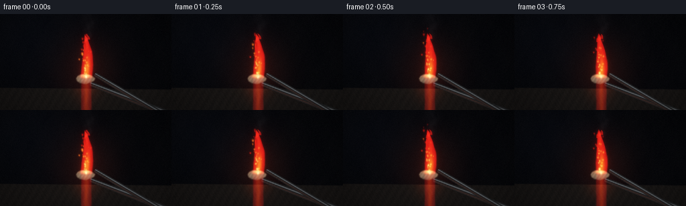
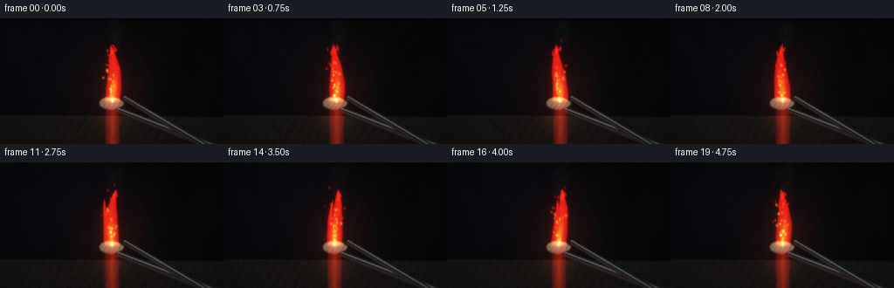
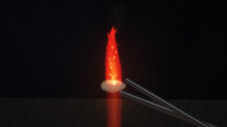
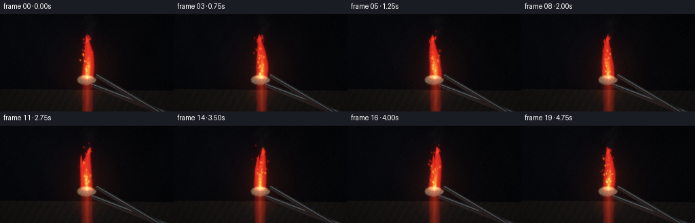
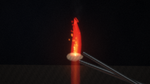
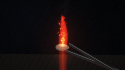

CODING AGENTS AS PIXEL WORLD MODELS
traex/DeepSeek-V4.1-Flash · material_0006
点击播放 · 原生 RGB 像素
逐轮保存的候选
回放视频、检查图与代码变化。
每份候选均可单独播放。实际图片检查记录在下方工具轨迹中。
候选 01播放与检查图
点击播放 · 原生 RGB 像素


展开代码变化
--- 上一保存版本
+++ 本次保存版本
@@ -0,0 +1,392 @@
+from pathlib import Path
+
+import cv2
+import numpy as np
+
+import artifact_io
+
+
+ROOT = Path(__file__).resolve().parent
+WIDTH = 256
+HEIGHT = 144
+FPS = 4.0
+FRAMES = 20
+SUPERSAMPLE = 4
+RW = WIDTH * SUPERSAMPLE
+RH = HEIGHT * SUPERSAMPLE
+
+
+def smoothstep(edge0, edge1, value):
+ t = np.clip((value - edge0) / (edge1 - edge0), 0.0, 1.0)
+ return t * t * (3.0 - 2.0 * t)
+
+
+def tapered_rod(x, y, p0, p1, width0, width1, softness=0.65):
+ """Return a soft mask, signed distance, and axial coordinate for a tapered rod."""
+ x0, y0 = p0
+ x1, y1 = p1
+ vx, vy = x1 - x0, y1 - y0
+ length2 = vx * vx + vy * vy
+ length = np.sqrt(length2)
+ t = np.clip(((x - x0) * vx + (y - y0) * vy) / length2, 0.0, 1.0)
+ px = x0 + t * vx
+ py = y0 + t * vy
+ distance = np.hypot(x - px, y - py)
+ signed = ((x - x0) * vy - (y - y0) * vx) / length
+ width = width0 + (width1 - width0) * t
+ mask = 1.0 - smoothstep(width, width + softness, distance)
+ return mask, signed, width, t
+
+
+def add_glow(layer, cx, cy, rx, ry, color, amplitude):
+ """Add a compact elliptical Gaussian glow to an RGB layer."""
+ x0 = max(0, int(np.floor(cx - 3.5 * rx)))
+ x1 = min(RW, int(np.ceil(cx + 3.5 * rx)) + 1)
+ y0 = max(0, int(np.floor(cy - 3.5 * ry)))
+ y1 = min(RH, int(np.ceil(cy + 3.5 * ry)) + 1)
+ if x0 >= x1 or y0 >= y1:
+ return
+ yy, xx = np.mgrid[y0:y1, x0:x1]
+ gaussian = np.exp(-2.0 * (((xx - cx) / rx) ** 2 + ((yy - cy) / ry) ** 2))
+ layer[y0:y1, x0:x1] += gaussian[..., None] * np.asarray(color)[None, None, :] * amplitude
+
+
+def background_and_floor(x, y, time_s):
+ xx = x[None, :]
+ yy = y[:, None]
+
+ radial = np.sqrt(((xx - 129.0) / 92.0) ** 2 + ((yy - 87.0) / 108.0) ** 2)
+ warm_halo = np.exp(-(radial * 2.15) ** 2)
+ cool_halo = np.exp(-(((xx - 34.0) / 94.0) ** 2 + ((yy - 19.0) / 84.0) ** 2))
+
+ bg = np.empty((RH, RW, 3), dtype=np.float32)
+ bg[..., 0] = 0.017 + 0.075 * warm_halo + 0.007 * cool_halo
+ bg[..., 1] = 0.019 + 0.022 * warm_halo + 0.010 * cool_halo
+ bg[..., 2] = 0.027 + 0.012 * warm_halo + 0.018 * cool_halo
+
+ texture = (
+ 0.52
+ + 0.20 * np.sin(0.071 * xx + 0.043 * yy + 0.4 * time_s)
+ + 0.14 * np.sin(0.149 * xx - 0.067 * yy + 1.2)
+ + 0.08 * np.sin(0.311 * xx + 0.187 * yy - 0.3)
+ )
+ bg += (texture[..., None] - 0.52) * np.array([0.008, 0.007, 0.006], dtype=np.float32)
+
+ # A broad graphite work surface grounds the suspended specimen.
+ floor_line = 111.5 + 0.010 * (xx - 128.0)
+ floor_mask = smoothstep(floor_line - 0.8, floor_line + 0.8, yy)
+ floor_texture = (
+ 0.50
+ + 0.20 * np.sin(0.53 * xx + 0.31 * yy)
+ + 0.14 * np.sin(1.17 * xx - 0.73 * yy + 0.7)
+ + 0.09 * np.sin(2.31 * xx + 1.63 * yy + 2.2)
+ )
+ floor_color = np.empty_like(bg)
+ floor_color[..., 0] = 0.055 + 0.026 * floor_texture
+ floor_color[..., 1] = 0.050 + 0.021 * floor_texture
+ floor_color[..., 2] = 0.048 + 0.018 * floor_texture
+
+ reflection_x = np.exp(-((xx - 127.5) / 17.0) ** 2)
+ reflection_y = np.clip((yy - floor_line) / 34.0, 0.0, 1.0)
+ reflection = reflection_x * (1.0 - reflection_y) ** 1.8 * (0.92 + 0.08 * np.sin(1.8 * time_s))
+ floor_color += reflection[..., None] * np.array([0.15, 0.034, 0.010], dtype=np.float32)
+ floor_color += warm_halo[..., None] * np.array([0.020, 0.009, 0.004], dtype=np.float32)
+
+ bg = bg * (1.0 - floor_mask[..., None]) + floor_color * floor_mask[..., None]
+ return bg
+
+
+def smoke_layer(x, y, time_s):
+ xx = x[None, :]
+ yy = y[:, None]
+ plume = np.zeros((RH, RW, 3), dtype=np.float32)
+
+ for band in range(3):
+ base = 47.0 - band * 3.5
+ rise = np.clip((base - yy) / (44.0 + band * 4.0), 0.0, 1.0)
+ center = 129.0 + 2.0 * band + 5.2 * rise * np.sin(1.15 * time_s + 1.7 * band) + 2.2 * rise * np.sin(3.0 * rise - 0.8 * time_s + band)
+ width = 2.8 + 7.8 * rise
+ wisps = (
+ 0.54
+ + 0.25 * np.sin(0.24 * xx + 0.37 * yy - 1.9 * time_s + band)
+ + 0.16 * np.sin(0.71 * xx - 0.23 * yy + 2.4 * time_s + 1.1 * band)
+ )
+ alpha = np.exp(-((xx - center) / width) ** 2) * smoothstep(0.0, 0.25, rise) * (1.0 - smoothstep(0.75, 1.0, rise))
+ alpha *= np.clip(wisps, 0.0, 1.0) * (0.090 - 0.016 * band)
+ smoke_color = np.array([0.17 + 0.02 * band, 0.16 + 0.018 * band, 0.17 + 0.02 * band], dtype=np.float32)
+ plume = plume * (1.0 - alpha[..., None]) + smoke_color * alpha[..., None]
+ return plume
+
+
+def tong_layer(x, y, time_s, front):
+ xx = x[None, :]
+ yy = y[:, None]
+ layer = np.zeros((RH, RW, 3), dtype=np.float32)
+ alpha = np.zeros((RH, RW), dtype=np.float32)
+
+ if front:
+ p0, p1 = (260.0, 161.0), (143.5, 91.3)
+ width0, width1 = 4.0, 2.8
+ else:
+ p0, p1 = (262.0, 153.5), (137.0, 105.0)
+ width0, width1 = 4.6, 3.1
+
+ mask, signed, width, axial = tapered_rod(xx, yy, p0, p1, width0, width1, softness=0.72)
+ across = np.clip(signed / np.maximum(width, 0.01), -1.0, 1.0)
+ steel_noise = 0.5 + 0.24 * np.sin(0.73 * xx + 1.31 * yy + 0.4) + 0.12 * np.sin(2.9 * xx - 1.1 * yy)
+
+ base = np.empty_like(layer)
+ base[..., 0] = 0.080 + 0.025 * steel_noise
+ base[..., 1] = 0.083 + 0.024 * steel_noise
+ base[..., 2] = 0.087 + 0.022 * steel_noise
+
+ bevel = np.exp(-((across + 0.38) / 0.22) ** 2)
+ highlight = np.clip(bevel * (0.46 + 0.10 * steel_noise), 0.0, 0.58)
+ base += highlight[..., None] * np.array([0.54, 0.57, 0.60], dtype=np.float32)
+
+ warm_side = np.exp(-((across - 0.55) / 0.30) ** 2)
+ base += warm_side[..., None] * np.array([0.085, 0.025, 0.010], dtype=np.float32) * (1.0 + 0.08 * np.sin(1.5 * time_s))
+
+ # A darker central groove and grip ribs keep the tongs from reading as flat bars.
+ groove = np.exp(-(across / 0.10) ** 2) * smoothstep(0.12, 0.32, axial)
+ base *= (1.0 - 0.28 * groove[..., None])
+ ribs = (0.5 + 0.5 * np.cos(1.55 * axial * np.hypot(p1[0] - p0[0], p1[1] - p0[1]))) ** 12
+ ribs *= smoothstep(0.73, 0.88, axial)
+ base *= (1.0 - 0.22 * ribs[..., None])
+
+ alpha = np.maximum(alpha, mask)
+ layer = base * mask[..., None]
+ return layer, alpha
+
+
+def specimen_layers(x, y, time_s):
+ mask = np.zeros((RH, RW), dtype=np.float32)
+ polygon = np.array(
+ [
+ [113.7, 96.4],
+ [116.0, 92.9],
+ [121.0, 90.5],
+ [128.6, 89.9],
+ [135.8, 92.0],
+ [141.8, 96.4],
+ [140.2, 100.1],
+ [134.0, 103.0],
+ [127.2, 105.1],
+ [119.1, 103.2],
+ [114.9, 100.5],
+ ],
+ dtype=np.float32,
+ )
+ cv2.fillPoly(mask, [np.round(polygon * SUPERSAMPLE).astype(np.int32)], 1.0)
+ mask = cv2.GaussianBlur(mask, (0, 0), 0.72 * SUPERSAMPLE)
+ mask = np.clip(mask, 0.0, 1.0)
+
+ xx = x[None, :]
+ yy = y[:, None]
+ roughness = (
+ 0.50
+ + 0.23 * np.sin(1.17 * xx + 0.79 * yy + 0.3)
+ + 0.15 * np.sin(2.71 * xx - 1.53 * yy + 1.9)
+ + 0.08 * np.sin(5.13 * xx + 3.37 * yy)
+ )
+ surface = np.empty((RH, RW, 3), dtype=np.float32)
+ surface[..., 0] = 0.29 + 0.17 * roughness
+ surface[..., 1] = 0.255 + 0.145 * roughness
+ surface[..., 2] = 0.22 + 0.115 * roughness
+
+ top_light = np.exp(-(((xx - 127.0) / 19.0) ** 2 + ((yy - 94.0) / 9.0) ** 2))
+ surface += top_light[..., None] * np.array([0.22, 0.105, 0.035], dtype=np.float32)
+ lower_shadow = smoothstep(98.0, 106.0, yy)
+ surface *= (1.0 - 0.38 * lower_shadow[..., None])
+
+ # The hottest part is a narrow reactive zone along the upper edge.
+ hot_zone = np.exp(-(((xx - 127.7) / 7.0) ** 2 + ((yy - 92.2) / 2.4) ** 2))
+ hot_zone *= 0.92 + 0.08 * np.sin(2.2 * time_s)
+ incandescent = np.zeros_like(surface)
+ incandescent += hot_zone[..., None] * np.array([1.0, 0.18, 0.025], dtype=np.float32) * 1.35
+ incandescent += (hot_zone**2)[..., None] * np.array([1.0, 0.68, 0.19], dtype=np.float32) * 1.15
+
+ return surface * mask[..., None], incandescent * mask[..., None], mask
+
+
+def flame_layers(x, y, time_s):
+ xx = x[None, :]
+ yy = y[:, None]
+
+ base_x = 128.3
+ base_y = 96.3
+ height = 66.5 + 1.3 * np.sin(1.35 * time_s) + 0.6 * np.sin(3.3 * time_s + 0.4)
+
+ q = np.clip((base_y - yy) / height, 0.0, 1.15)
+ sway = (
+ (1.2 + 2.5 * q) * np.sin(1.35 * time_s + 3.5 * q)
+ + 0.75 * q * np.sin(3.7 * time_s - 2.2 * q + 0.8)
+ + 0.32 * np.sin(5.1 * time_s)
+ )
+ center = base_x + sway
+ radius = 10.6 * np.power(np.clip(1.0 - q, 0.0, 1.0), 0.54)
+ radius *= 0.80 + 0.27 * np.sin(np.pi * np.clip(q * 1.15, 0.0, 1.0))
+
+ noise = (
+ 0.48 * np.sin(0.38 * xx + 0.16 * yy - 4.6 * time_s)
+ + 0.25 * np.sin(0.79 * xx - 0.31 * yy + 3.2 * time_s + 1.1)
+ + 0.15 * np.sin(-0.52 * xx + 0.57 * yy + 2.1 * time_s + 2.6)
+ + 0.08 * np.sin(1.31 * xx + 0.92 * yy - 1.3 * time_s)
+ )
+ normalized = np.abs(xx - center) / np.maximum(radius, 0.08)
+ normalized += noise * (0.045 + 0.055 * q)
+ body = 1.0 - smoothstep(0.74, 1.07, normalized)
+ body *= smoothstep(-0.015, 0.035, q) * (1.0 - smoothstep(0.90, 1.03, q))
+
+ # A secondary licking tongue makes the flame silhouette distinctive without
+ # turning it into an unrelated second flame.
+ q2 = np.clip((base_y - 4.2 - yy) / (height * 0.79), 0.0, 1.05)
+ center2 = base_x - 4.6 + 2.7 * np.sin(1.4 * time_s + 1.0) + 2.2 * q2 * np.sin(2.8 * time_s + 4.0 * q2)
+ radius2 = 4.6 * np.power(np.clip(1.0 - q2, 0.0, 1.0), 0.55)
+ radius2 *= 0.78 + 0.28 * np.sin(np.pi * np.clip(q2, 0.0, 1.0))
+ normalized2 = np.abs(xx - center2) / np.maximum(radius2, 0.08) + 0.10 * noise
+ body2 = 1.0 - smoothstep(0.68, 1.03, normalized2)
+ body2 *= smoothstep(-0.01, 0.06, q2) * (1.0 - smoothstep(0.84, 1.02, q2)) * 0.88
+ body = np.maximum(body, body2)
+
+ radial = np.exp(-1.9 * (np.abs(xx - center) / np.maximum(radius, 0.1)) ** 2)
+ radial2 = np.exp(-2.4 * (np.abs(xx - center2) / np.maximum(radius2, 0.1)) ** 2) * body2
+ radial = np.maximum(radial * body, radial2)
+
+ hot = np.exp(-1.8 * (((xx - center) / np.maximum(radius * 0.48, 0.1)) ** 2 + ((q - 0.18) / 0.28) ** 2))
+ hot *= body
+ white_core = np.exp(-3.0 * (((xx - (center - 0.3)) / 2.5) ** 2 + ((yy - 94.0) / 3.5) ** 2))
+ white_core *= 0.93 + 0.07 * np.sin(3.8 * time_s)
+
+ streaks = 0.76 + 0.24 * (
+ 0.5
+ + 0.28 * np.sin(0.73 * xx + 0.17 * yy - 6.2 * time_s)
+ + 0.14 * np.sin(-1.17 * xx + 0.43 * yy + 3.4 * time_s + 1.2)
+ )
+ flicker = 0.97 + 0.025 * np.sin(2.2 * time_s + 0.4) + 0.018 * np.sin(5.7 * time_s)
+
+ emission = np.zeros((RH, RW, 3), dtype=np.float32)
+ emission += (body * streaks * flicker)[..., None] * np.array([0.86, 0.018, 0.025], dtype=np.float32)
+ emission += (radial * streaks * flicker)[..., None] * np.array([1.00, 0.075, 0.012], dtype=np.float32)
+ emission += (hot * flicker)[..., None] * np.array([1.00, 0.39, 0.030], dtype=np.float32)
+ emission += (white_core * flicker)[..., None] * np.array([1.00, 0.88, 0.53], dtype=np.float32)
+
+ # Small irregular tongues at the tip keep the upper edge alive at 4 fps.
+ for index in range(3):
+ phase = 0.7 * index
+ tip_y = base_y - height * (0.80 + 0.035 * index)
+ tip_x = base_x + sway + (index - 1) * (2.7 + 0.8 * np.sin(time_s + phase))
+ tongue_height = 7.5 + 2.2 * np.sin(1.8 * time_s + phase)
+ local_y = np.clip((tip_y - yy) / tongue_height, 0.0, 1.0)
+ local_center = tip_x + 2.4 * local_y * np.sin(3.0 * local_y - 1.5 * time_s + phase)
+ local_width = (1.8 + 0.6 * index) * (1.0 - local_y) ** 0.7
+ local_mask = 1.0 - smoothstep(0.58, 1.02, np.abs(xx - local_center) / np.maximum(local_width, 0.08))
+ local_mask *= smoothstep(0.0, 0.10, local_y) * (1.0 - smoothstep(0.82, 1.0, local_y))
+ emission += local_mask[..., None] * np.array([0.95, 0.045, 0.020], dtype=np.float32) * 0.72
+
+ return emission, center, height, base_y
+
+
+def spark_layer(x, y, time_s, base_x, base_y):
+ layer = np.zeros((RH, RW, 3), dtype=np.float32)
+ rng = np.random.default_rng(73421)
+ count = 34
+ phases = rng.random(count)
+ lifetimes = rng.uniform(1.25, 3.4, count)
+ rise = rng.uniform(35.0, 78.0, count)
+ drift = rng.uniform(-11.0, 11.0, count)
+ swirl = rng.uniform(0.8, 5.2, count)
+ sizes = rng.uniform(0.55, 1.45, count)
+ phase2 = rng.uniform(0.0, 2.0 * np.pi, count)
+
+ for index in range(count):
+ age = (time_s / lifetimes[index] + phases[index]) % 1.0
+ if age < 0.025 or age > 0.97:
+ continue
+ envelope = np.sin(np.pi * age) ** 0.55
+ x_now = base_x + drift[index] * age + swirl[index] * age * np.sin(2.6 * age + phase2[index] + 0.9 * time_s)
+ y_now = base_y - rise[index] * age - 3.0 * age * age
+ x_prev = base_x + drift[index] * max(0.0, age - 0.045) + swirl[index] * max(0.0, age - 0.045) * np.sin(2.6 * max(0.0, age - 0.045) + phase2[index] + 0.9 * time_s)
+ y_prev = base_y - rise[index] * max(0.0, age - 0.045) - 3.0 * max(0.0, age - 0.045) ** 2
+
+ if age < 0.34:
+ color = np.array([1.0, 0.72, 0.20], dtype=np.float32)
+ elif age < 0.70:
+ color = np.array([1.0, 0.31, 0.055], dtype=np.float32)
+ else:
+ color = np.array([0.88, 0.055, 0.025], dtype=np.float32)
+
+ for trail_index, fraction in enumerate((0.0, 0.32, 0.62, 0.86)):
+ px = x_prev + (x_now - x_prev) * fraction
+ py = y_prev + (y_now - y_prev) * fraction
+ strength = envelope * (0.24 + 0.19 * trail_index) * (0.82 + 0.18 * np.sin(time_s * 4.0 + index))
+ radius = sizes[index] * (0.55 + 0.20 * trail_index)
+ add_glow(layer, px * SUPERSAMPLE, py * SUPERSAMPLE, radius * SUPERSAMPLE, radius * SUPERSAMPLE, color, strength)
+
+ add_glow(
+ layer,
+ x_now * SUPERSAMPLE,
+ y_now * SUPERSAMPLE,
+ sizes[index] * 1.7 * SUPERSAMPLE,
+ sizes[index] * 1.7 * SUPERSAMPLE,
+ color,
+ envelope * 0.38,
+ )
+ return layer
+
+
+def render_frame(frame_index):
+ time_s = frame_index / FPS
+ x = (np.arange(RW, dtype=np.float32) + 0.5) / SUPERSAMPLE - 0.5
+ y = (np.arange(RH, dtype=np.float32) + 0.5) / SUPERSAMPLE - 0.5
+
+ scene = background_and_floor(x, y, time_s)
+ smoke = smoke_layer(x, y, time_s)
+ smoke_alpha = np.clip(np.max(smoke, axis=2) * 4.2, 0.0, 0.22)
+ scene = scene * (1.0 - smoke_alpha[..., None]) + smoke
+
+ rear_tongs, rear_alpha = tong_layer(x, y, time_s, front=False)
+ scene = scene * (1.0 - rear_alpha[..., None]) + rear_tongs
+
+ specimen, specimen_emission, specimen_mask = specimen_layers(x, y, time_s)
+ scene = scene * (1.0 - specimen_mask[..., None]) + specimen
+
+ front_tongs, front_alpha = tong_layer(x, y, time_s, front=True)
+ scene = scene * (1.0 - front_alpha[..., None]) + front_tongs
+
+ flame, _, _, base_y = flame_layers(x, y, time_s)
+ sparks = spark_layer(x, y, time_s, 128.3, base_y)
+ emission = flame + sparks + specimen_emission
+
+ # Convert the supersampled physical layers back to the delivery resolution.
+ scene_small = cv2.resize(scene, (WIDTH, HEIGHT), interpolation=cv2.INTER_AREA)
+ emission_small = cv2.resize(emission, (WIDTH, HEIGHT), interpolation=cv2.INTER_AREA)
+
+ bloom = (
+ 0.13 * cv2.GaussianBlur(emission_small, (0, 0), 2.0)
+ + 0.075 * cv2.GaussianBlur(emission_small, (0, 0), 5.0)
+ + 0.045 * cv2.GaussianBlur(emission_small, (0, 0), 10.5)
+ )
+ linear = scene_small + 0.92 * emission_small + bloom
+ mapped = 1.0 - np.exp(-1.35 * np.clip(linear, 0.0, 12.0))
+
+ yy, xx = np.mgrid[0:HEIGHT, 0:WIDTH].astype(np.float32)
+ vignette = 1.0 - 0.28 * np.clip((((xx - 128.0) / 151.0) ** 2 + ((yy - 72.0) / 104.0) ** 2 - 0.12) * 1.1, 0.0, 1.0)
+ mapped *= vignette[..., None]
+
+ # Restrained temporal grain adds a photographic finish without obscuring the
+ # low-resolution flame structure.
+ grain_rng = np.random.default_rng(4100 + frame_index)
+ grain = grain_rng.normal(0.0, 0.0042, (HEIGHT, WIDTH, 1)).astype(np.float32)
+ mapped = np.clip(mapped + grain, 0.0, 1.0)
+ return np.round(mapped * 255.0).astype(np.uint8)
+
+
+def main():
+ frames = np.stack([render_frame(index) for index in range(FRAMES)], axis=0)
+ artifact_io.save(frames, ROOT)
+ print(f"Saved {len(frames)} frames to {ROOT}")
+
+
+if __name__ == "__main__":
+ main()
候选 02播放与检查图
点击播放 · 原生 RGB 像素

展开代码变化
--- 上一保存版本
+++ 本次保存版本
@@ -253,10 +253,10 @@
radial2 = np.exp(-2.4 * (np.abs(xx - center2) / np.maximum(radius2, 0.1)) ** 2) * body2
radial = np.maximum(radial * body, radial2)
- hot = np.exp(-1.8 * (((xx - center) / np.maximum(radius * 0.48, 0.1)) ** 2 + ((q - 0.18) / 0.28) ** 2))
+ hot = np.exp(-2.2 * (((xx - center) / np.maximum(radius * 0.40, 0.1)) ** 2 + ((q - 0.19) / 0.30) ** 2))
hot *= body
- white_core = np.exp(-3.0 * (((xx - (center - 0.3)) / 2.5) ** 2 + ((yy - 94.0) / 3.5) ** 2))
- white_core *= 0.93 + 0.07 * np.sin(3.8 * time_s)
+ white_core = np.exp(-3.8 * (((xx - (center - 0.3)) / 1.75) ** 2 + ((yy - 94.0) / 2.2) ** 2))
+ white_core *= 0.90 + 0.10 * np.sin(3.8 * time_s)
streaks = 0.76 + 0.24 * (
0.5
@@ -266,10 +266,10 @@
flicker = 0.97 + 0.025 * np.sin(2.2 * time_s + 0.4) + 0.018 * np.sin(5.7 * time_s)
emission = np.zeros((RH, RW, 3), dtype=np.float32)
- emission += (body * streaks * flicker)[..., None] * np.array([0.86, 0.018, 0.025], dtype=np.float32)
- emission += (radial * streaks * flicker)[..., None] * np.array([1.00, 0.075, 0.012], dtype=np.float32)
- emission += (hot * flicker)[..., None] * np.array([1.00, 0.39, 0.030], dtype=np.float32)
- emission += (white_core * flicker)[..., None] * np.array([1.00, 0.88, 0.53], dtype=np.float32)
+ emission += (body * streaks * flicker)[..., None] * np.array([0.72, 0.020, 0.038], dtype=np.float32)
+ emission += (radial * streaks * flicker)[..., None] * np.array([1.00, 0.105, 0.020], dtype=np.float32)
+ emission += (hot * flicker)[..., None] * np.array([0.96, 0.49, 0.055], dtype=np.float32)
+ emission += (white_core * flicker)[..., None] * np.array([1.00, 0.91, 0.63], dtype=np.float32) * 0.84
# Small irregular tongues at the tip keep the upper edge alive at 4 fps.
for index in range(3):
@@ -282,7 +282,7 @@
local_width = (1.8 + 0.6 * index) * (1.0 - local_y) ** 0.7
local_mask = 1.0 - smoothstep(0.58, 1.02, np.abs(xx - local_center) / np.maximum(local_width, 0.08))
local_mask *= smoothstep(0.0, 0.10, local_y) * (1.0 - smoothstep(0.82, 1.0, local_y))
- emission += local_mask[..., None] * np.array([0.95, 0.045, 0.020], dtype=np.float32) * 0.72
+ emission += local_mask[..., None] * np.array([0.92, 0.075, 0.028], dtype=np.float32) * 0.72
return emission, center, height, base_y
@@ -363,12 +363,12 @@
emission_small = cv2.resize(emission, (WIDTH, HEIGHT), interpolation=cv2.INTER_AREA)
bloom = (
- 0.13 * cv2.GaussianBlur(emission_small, (0, 0), 2.0)
- + 0.075 * cv2.GaussianBlur(emission_small, (0, 0), 5.0)
- + 0.045 * cv2.GaussianBlur(emission_small, (0, 0), 10.5)
- )
- linear = scene_small + 0.92 * emission_small + bloom
- mapped = 1.0 - np.exp(-1.35 * np.clip(linear, 0.0, 12.0))
+ 0.15 * cv2.GaussianBlur(emission_small, (0, 0), 2.0)
+ + 0.095 * cv2.GaussianBlur(emission_small, (0, 0), 5.0)
+ + 0.060 * cv2.GaussianBlur(emission_small, (0, 0), 10.5)
+ )
+ linear = scene_small + 1.00 * emission_small + bloom
+ mapped = 1.0 - np.exp(-1.28 * np.clip(linear, 0.0, 12.0))
yy, xx = np.mgrid[0:HEIGHT, 0:WIDTH].astype(np.float32)
vignette = 1.0 - 0.28 * np.clip((((xx - 128.0) / 151.0) ** 2 + ((yy - 72.0) / 104.0) ** 2 - 0.12) * 1.1, 0.0, 1.0)
候选 03播放与检查图

可观测工具轨迹
实际执行的命令与返回图片。
命令 1exit 0
/bin/bash -c "pwd && rg --files -g 'prompt.txt' -g 'GENERATION_RULES.md' -g 'task_spec.json' -g '"'!*.mp4'"' -g '"'!*.png'"' | sort"
命令 2exit 0
/bin/bash -c "sed -n '1,240p' prompt.txt"
命令 3exit 0
/bin/bash -c "sed -n '1,280p' GENERATION_RULES.md"
命令 4exit 0
/bin/bash -c 'cat task_spec.json'
命令 5exit 0
/bin/bash -c "find . -maxdepth 2 -type f -printf '%p\\n' | sort | sed -n '1,240p'"
命令 6exit 0
/bin/bash -c "sed -n '1,260p' artifact_io.py"
命令 7exit 0
/bin/bash -c "sed -n '1,220p' player_template.html"
命令 8exit 0
/bin/bash -c "python - <<'PY'
import numpy, PIL
print('numpy', numpy.__version__)
print('Pillow', PIL.__version__)
try:
import scipy; print('scipy', scipy.__version__)
except Exception as e: print('scipy unavailable', e)
try:
import cv2; print('cv2', cv2.__version__)
except Exception as e: print('cv2 unavailable', e)
PY"命令 9exit 0
/bin/bash -c 'python generate.py'
命令 10exit 0
/bin/bash -c 'command -v ffmpeg && command -v montage || true'
命令 11exit 0
/bin/bash -c 'python generate.py'
命令 12exit 0
/bin/bash -c "python - <<'PY'
from pathlib import Path
import json, numpy as np
from PIL import Image
root=Path('.')
frames=np.stack([np.asarray(Image.open(p).convert('RGB')) for p in sorted((root/'frames').glob('*.png'))])
print('frames', frames.shape, frames.dtype)
print('range', frames.min(axis=(0,1,2)), frames.max(axis=(0,1,2)))
print('mean RGB', np.round(frames.mean(axis=(0,1,2)),2))
diff=np.abs(frames[1:].astype(np.int16)-frames[:-1].astype(np.int16))
print('mean frame delta', round(float(diff.mean()),3), 'max', int(diff.max()))
print('changed pixels/frame', np.round((diff.max(axis=3)>2).mean(axis=(1,2)),3))
print('artifacts', {p.name: p.stat().st_size for p in [root/'pixels.npz', root/'index.html', root/'inspection.png']})
PY"视觉工具实际返回图片 1

视觉工具实际返回图片 2

视觉工具实际返回图片 3

视觉工具实际返回图片 4

视觉工具实际返回图片 5

保存候选 3 份；完成命令 12 次；可验证图片返回 5 张。原始 API 响应与完整日志保留在本地。